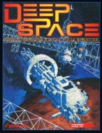

|  | Technical data |
| Supplement for the role-playing game Cyberpunk 2020, published by R. Talsorian Games (1993) | |
| Theme | Space and the colonization of the solar system |
| Background quality | 4 / 5 |
| Scenario quality | 2 / 5 |
| Rules quality | 5 / 5 |
| Artworks quality | 2 / 5 |
| Writing quality | 4 / 5 |
Sequel to Near Orbit and extremely well documented, this supplement is a gold mine to make your players travel beyond the gravity well. The rules are substantial, the documentation on the solar system and spacecraft is realistic and complete. Finally space is within your reach, and you won't ignore the risks. Small bemol, the space communities are not very worked out, nor the contents of the various stations. This is left to the discretion of the GM. Nevertheless, this supplement provides the base layer to create beautiful campaigns in orbit. One will regret nevertheless that they have taken the illustrations of Near Orbit and that the scenario provided is a little simple. They would have benefited from forgetting the scenario and replacing it by the complete and detailed description of a lunar base for example. Deep Space is nevertheless a very good supplement.
{kind=link}